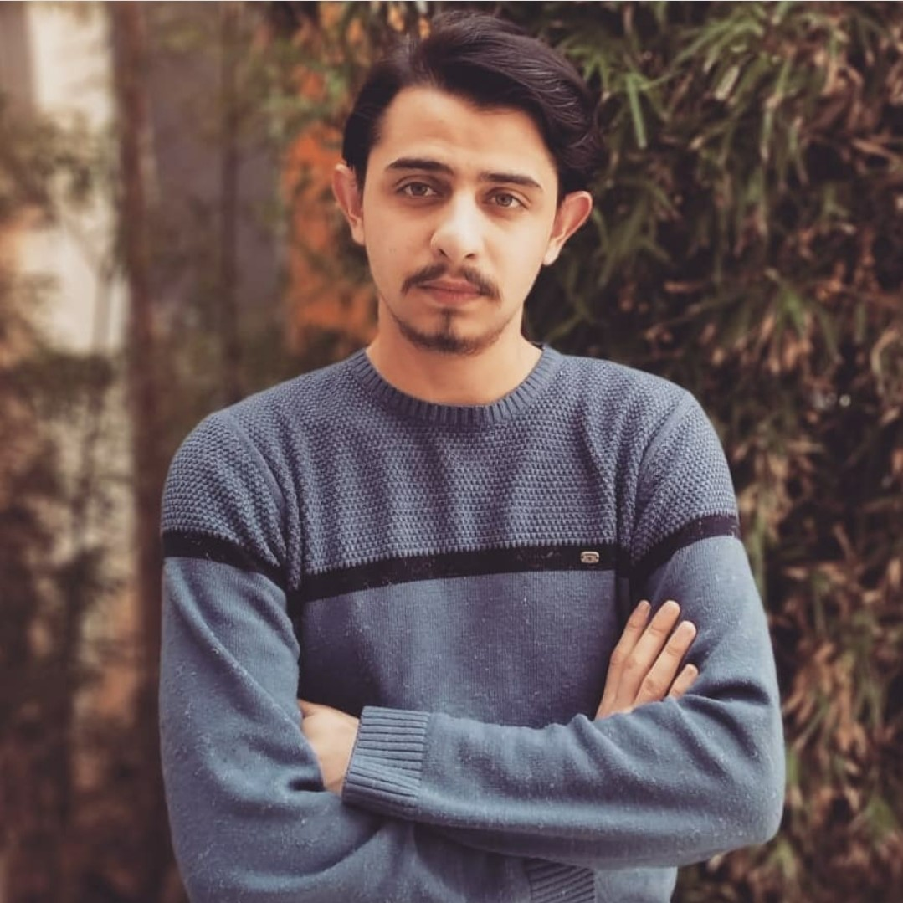

Özgeçmiş

İlgi Alanları
Kitap Okumak
Araştırma Yapmak
Müzik Dinlemek
Film/Dizi İzlemek
Spor(Yürüyüş, Fitness vb.)
Oyun Oynamak
EĞİTİM HAYATIM
İlk ve Orta okuldayken 2 şeye karşı ilgim vardır biri arabalar diğeri ise bilgisayar ve teknoloji. Bundan dolayı liseyi ya makine bölümünde yada bilgisayar bölümünde okumalıydım. Bence fazla çalışkan ve başarılı bir öğrenci olmadığımdan ve de Teknolojiye, yeniliklere ve bilgisayara olan merakım sebebiyle bilgisayar bölümüne yönelmeye karar verdim. 2011 yılında İbrahim Müteferrika Teknik ve Anadolu Lisesini kazandım ve 3 yıl boyunca (10.sınıftan itibaren) Web Tasarım bölümünde öğrenim gördüm. Meslek Lisesi çıkışlı olduğumdan ve üniversite sınavına da hazırlanmadığımdan dolayı okul puanımla 2 yıllık bir üniversiteye yerleştim. İlk olarak İSTANBUL Esenyurt Üniversitesi Bilgisayar Programcılığı bölümünü kazandım ve 3 yılda mezun oldum. Son sene alttan aldığım derslerin az olmasından dolayı aynı zamanda DGS hazırlandım ve sınav puanımla Kocaeli Üniversitesi Bilişim Sistemleri Mühendisliğini kazandım. Şu anda öğrenimime burada devam etmekteyim.
YABANCI DİL
Yabancı dil olarak şuan İngilizce üzerine yoğunlaşmaktayım. Güncel olarak gittiğim bir kurs veya aldığım bir özel ders yok kendi imkanlarımla internet üzerinden (udemy, youtube, uygulama veya web site) öğrenmeye çalışıyorum. Elimden geldiğince ise ingilizce kitap, çizgi roman, makale vb. okumaya çalışıyorum ve anlamadığım yerlerde Google translate’den yardım alıp not tutuyorum.
İŞ
Meslek Lisesi çıkışlı olduğumdan 12.sınıfta stajımı 1 sene boyunca bir bilgisayar teknik servis firmasında yaptım ve burada bir stajyer olarak değil de tekniker/teknik servis elemanı olarak çalıştım. 2015’ten beri ortağımla hem yönetimini hem de yazarlık işlerini sağladığımız technovadi.com sitesiyle ilgileniyorum. 2017’nin Şubat ayında Galatasaray Spor Kulübü TaçSpor Tesislerinde part-time olarak IT departmanında işe başladım. IT işlerinin gerekmediği zamanlarda ise resepsiyonist olarak görev yaptım. Hala orada part-time olarak çalışıyor gözüküyorum fakat pandemiden dolayı IT konularında uzaktan destek sağlıyorum. Freelance olarak ise web site konusunda işler yapıyorum. Hazır CMS’ler kullanıyorum veya bilgim dahilinde 0’dan site (backEnd - frontEnd) yazıyorum.
BİLGİSAYAR BİLGİSİ
Şuanda daha çok C#, C++ ve Java üzerinde tecrübe sahibi olmama rağmen elimden geldiğince yeni diller yeni teknolojiler öğrenmeye çalışıyorum. Kendimi geliştirmeye sürekli açığım ve süreklide geliştirdiğimi düşünüyorum. Bunun için tek bir kaynaktan değil de yerli yabancı birçok kaynaktan yardım alıyorum.
GELECEK
Açıkçası şuan bile hala gelecekle ilgili ne yapmam gerektiği konusunda tam olarak kesin bir karar vermiş sayılmam sürekli farklı şeyler denemek ve çeşitli alanlarda uzmanlaşmak istiyorum ve bunun bana bir süre sonra zararının dokunacağının tahmin edebiliyorum. Fakat şuan mobil ve desktop uygulama geliştirmeye daha yakınım. Herhalde yakın gelecekte bu konuya tamamıyla yoğunlaşacağım. Bu yüzden mobil konusunda kendimi geliştirmek amacıyla yakın zamanda (projelerimi teslim ettiğimde) react native öğrenmeyi düşünüyorum.